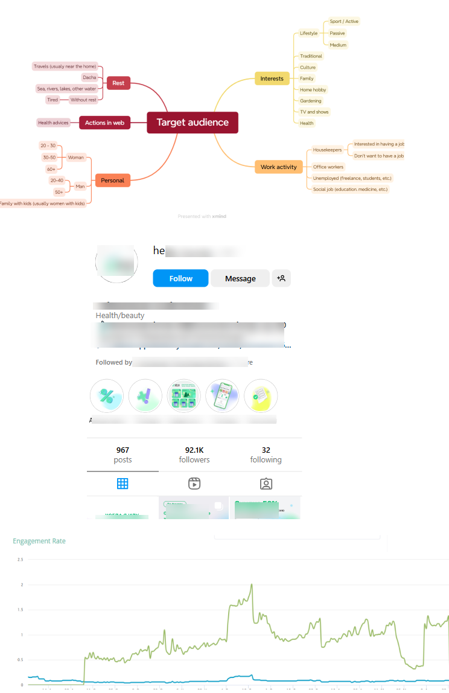
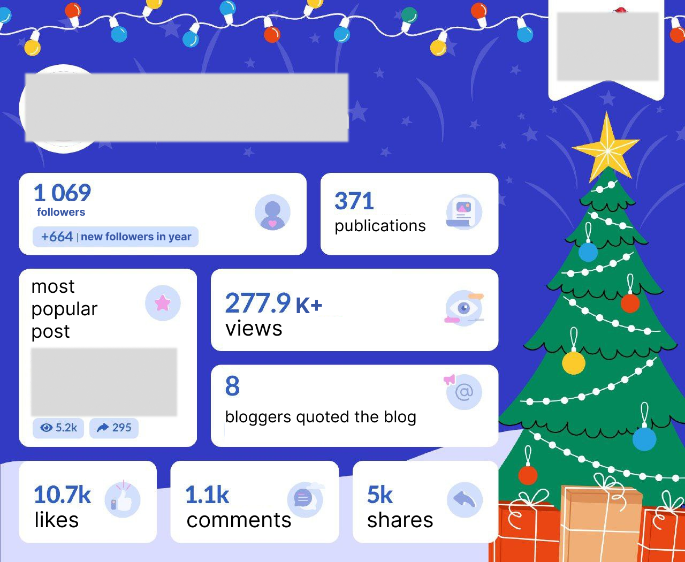

CASE STUDIES
CASE STUDY #1: EFFERON – MEDICAL DEVICE B2B
CLIENT: Efferon (Hemoadsorption Technology)
CHALLENGE: Build clinical credibility on LinkedIn for niche medical device company with minimal existing presence
SOLUTION:
• Developed clinical-first content strategy around published trial data
• Focused on pediatric sepsis market gap (Efferon NEO)
• Maintained authentic, evidence-driven voice
RESULTS:
• Follower growth: 764 → 1,196 (+56.5% in 8 months)
• Post performance: 4–9 reposts per post
• Organic engagement from verified healthcare institutions and ICU departments
• Sustainable growth without paid ads
CASE STUDY #2: PHARMACEUTICAL SMM STRATEGY
CLIENT: Laboratory Services Company
CHALLENGE: Abandoned social networks, unclear target audience
SOLUTION:
• Redefined target audience (healthcare professionals)
• Rewrote content strategy and tone of voice
• Created educational + engaging content mix
• Launched expertise-focused content plan
RESULTS:
• 3x increase in followers
• 2.5x increase in engagement
• Regular audience growth
• Content became go-to resource for lab service
CASE STUDY #3: POPULAR SCIENCE BLOG GROWTH
CLIENT: Science Blog (Zero Advertising Budget)
CHALLENGE: Build audience and brand from zero with no ad spend
SOLUTION:
• Designed recognizable visual style
• Created consistent, high-quality content
• Built community through organic growth
RESULTS:
• 1,000+ engaged followers
• 277,900 impressions/year
• 4 advertising contracts signed
• Sustainable growth without paid ads

